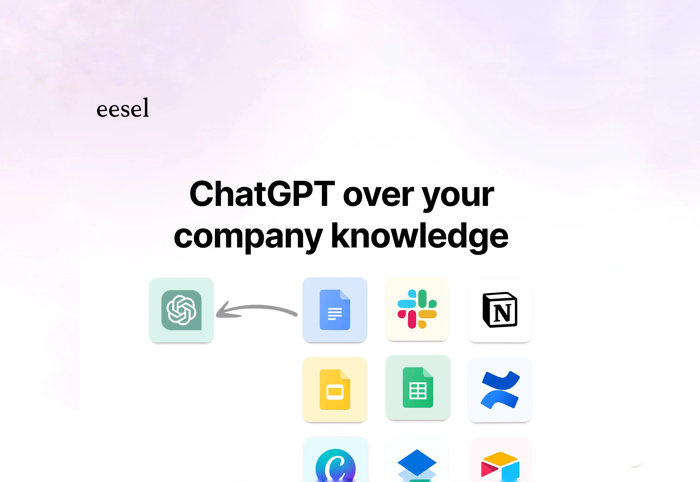

Browse 5+ Best Productivity Tools
EESEL AI
 Eesel AI is an innovative artificial intelligence platform that has gained significant attention in recent years.
Developed by a team of experts in the field, Eesel AI utilizes advanced machine learning algorithms and natural language
processing techniques to provide intelligent solutions for various industries. The platform is designed to analyze large
volumes of data, extract valuable insights, and make informed predictions. Eesel AI has been successfully applied in areas
such as healthcare, finance, marketing, and customer service, among others. Its capabilities include sentiment analysis,
image recognition, speech recognition, and recommendation systems. With its ability to continuously learn and adapt,
Eesel AI is poised to revolutionize the way businesses operate and make decisions.EESEL AI.
HAMATA AI
Wonder Share Presentatory is a powerful presentation software that allows users to create engaging and interactive presentations with ease.
With its intuitive interface and extensive features, it has become a popular choice among professionals and students alike.
In this paragraph, we will explore the key features and benefits of Wonder Share Presentatory, and why it stands out from other
presentation software.
HAMATA AI .
GAMMA

Gamma AI is a powerful and versatile type of artificial intelligence that has the potential to revolutionize a wide range of industries
and fields. Its ability to perform self-modification and learn from a wide range of data sources makes it one of the most promising
AI models currently available. As research and development in the field of Gamma AI continues to advance, we can expect to see more
and more applications of this technology in the years to come.
GAMMA.
HEYLIBBY AI

HeyLibby AI is an advanced artificial intelligence search engine developed by AI Search Inc. It is designed to provide users with
comprehensive and accurate information by utilizing the most authoritative and factual sources available. HeyLibby AI uses a combination
of natural language processing, machine learning, and data analysis techniques to understand user queries and deliver relevant and reliable
results. It constantly updates its database with the latest information from trusted sources to ensure that users receive up-to-date and trustworthy
answers. HeyLibby AI aims to enhance the search experience by providing detailed and comprehensive responses to user queries, making it a valuable
tool for individuals seeking reliable information.
HEYLIBBY AI.